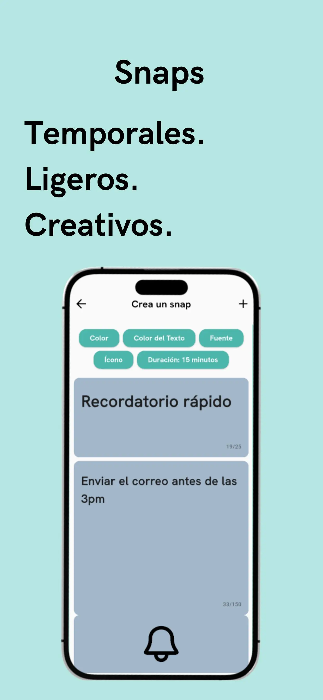
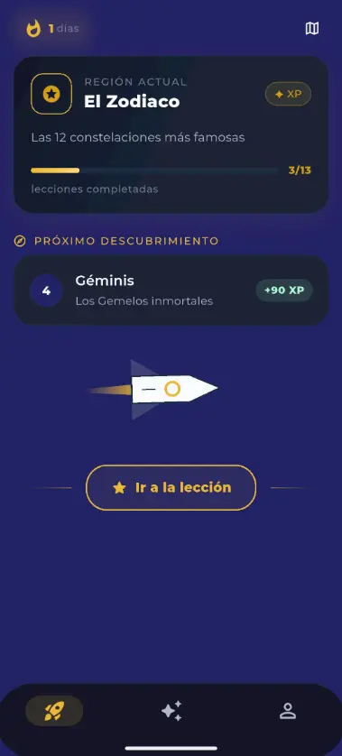
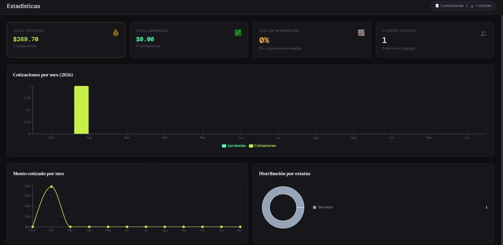

Dar forma a una idea
Definimos qué debe resolver el producto, para quién y cuál es la versión adecuada para empezar.
Estrategia · experiencia · prototipo
Si necesitas una app, una página que comunique mejor tu negocio o un sistema que te ahorre trabajo, puedo ayudarte desde la primera idea hasta dejarlo funcionando. Tú explicas el problema. Yo conecto diseño, código y lanzamiento.
Productos propios y soluciones web en los que me encargué de convertir una idea en una experiencia usable, conectada y lista para producción.

Una app de notas que desaparecen cuando dejan de ser útiles. Disponible en iOS y Android, con acceso rápido desde la pantalla de inicio.

Una experiencia que hace la astronomía más cercana mediante recorridos, lecciones breves y progreso visible.

Un marcador digital que evita cálculos manuales y guarda cada partida con sus jugadores y ubicación.

Una herramienta que organiza clientes y productos, calcula totales y crea cotizaciones listas para enviar.
La parte que no se ve, pero mantiene una app disponible, segura y preparada para crecer.
Puedes llegar con una idea, un proceso manual o un producto que necesita mejorar. Primero aclaramos el objetivo y después elegimos la solución.
Definimos qué debe resolver el producto, para quién y cuál es la versión adecuada para empezar.
Aplicaciones para iPhone y Android con una experiencia cuidada, pagos, cuentas o funciones sin conexión cuando hacen falta.
Páginas rápidas y responsivas que explican bien tu negocio y facilitan que un cliente dé el siguiente paso.
Sistemas internos para cotizar, organizar información o reemplazar tareas repetitivas que hoy consumen tiempo.
Soy José, desarrollador full-stack especializado en productos móviles. No trabajo solo para que algo funcione. También cuido que se entienda, que se sienta propio de tu proyecto y que sea sencillo mantenerlo después de publicarlo.
El proceso se mantiene visible. Sabes qué estamos resolviendo, qué sigue y por qué se toma cada decisión importante.
Hablamos del objetivo, las personas que lo usarán y lo mínimo que debe resolver bien.
Diseño y desarrollo avanzan juntos para validar pronto y corregir antes de que algo cueste más.
La entrega incluye pruebas, publicación y una base ordenada para que el proyecto pueda seguir creciendo.
Cuéntame qué quieres mejorar, qué haces hoy y qué resultado buscas. No necesitas llegar con especificaciones técnicas.
josecvfg@gmail.com